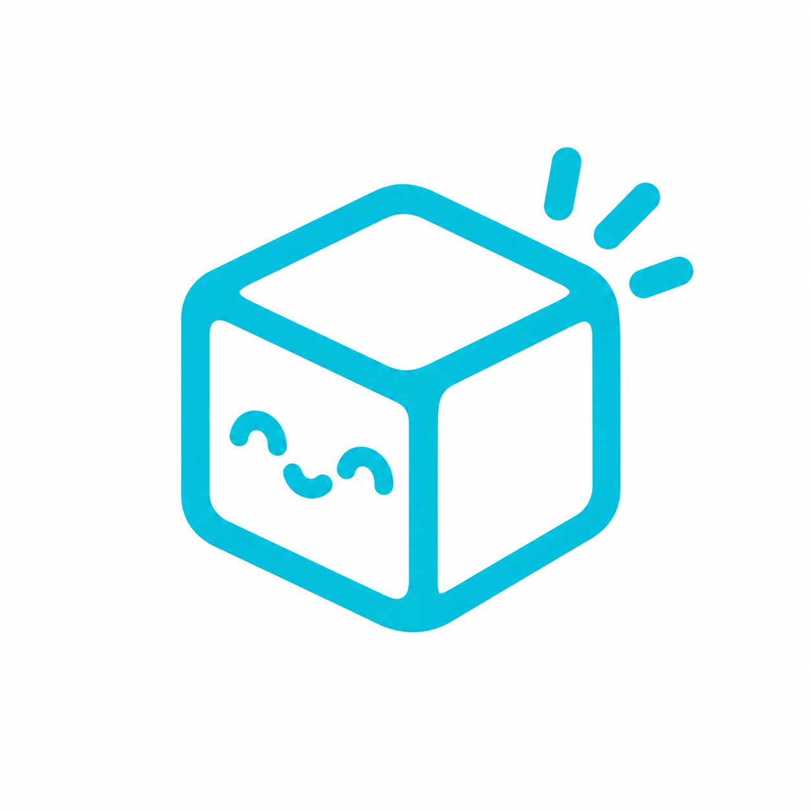

Toma el logo maestro icons/cubica.png, le quita el fondo blanco, recorta los
márgenes y lo guarda a 320 px para que el PDF de cada cotización pese unos kilobytes en
vez de ~1 MB.
- Ábrelo con un servidor local (el navegador no deja leer archivos con
file://):python3 -m http.server 8000y entra alocalhost:8000/tools/logo.html. - Pulsa Descargar y guarda el archivo como
icons/cubica-logo.png(reemplaza al existente). - Recarga la app: el encabezado, el favicon y el PDF ya usan ese archivo.

Procesando…